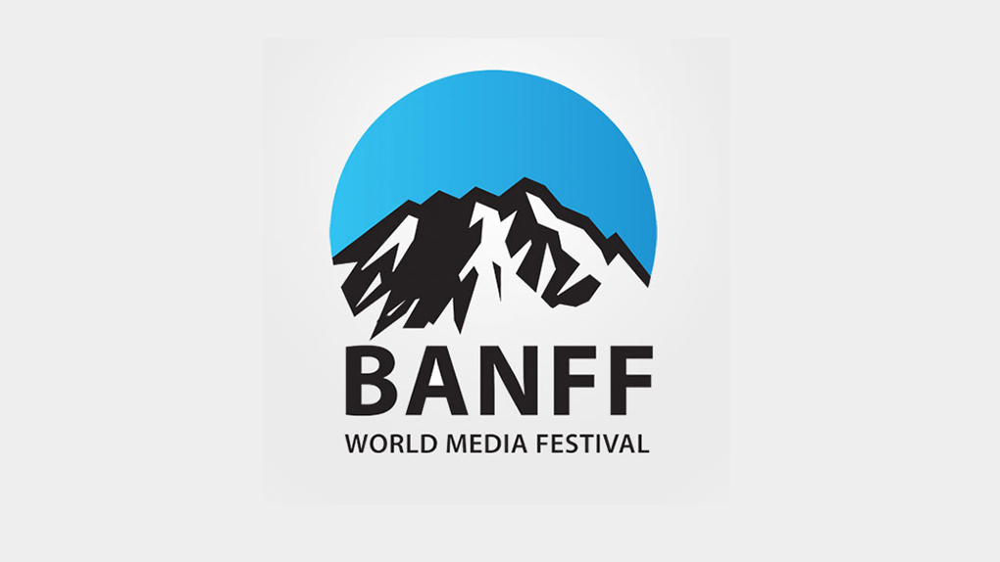
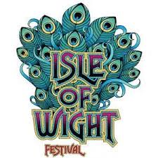
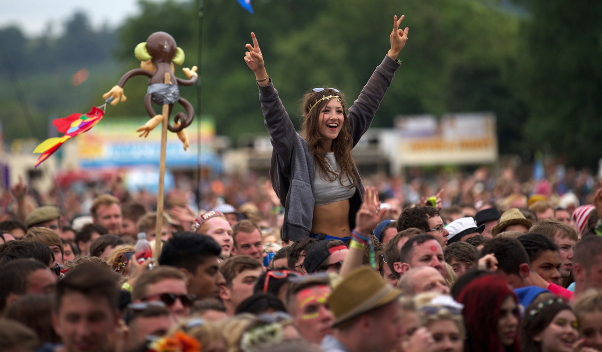
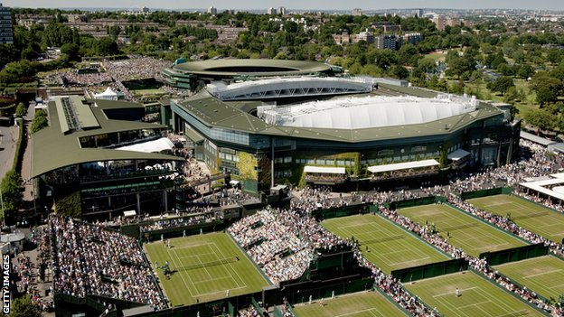
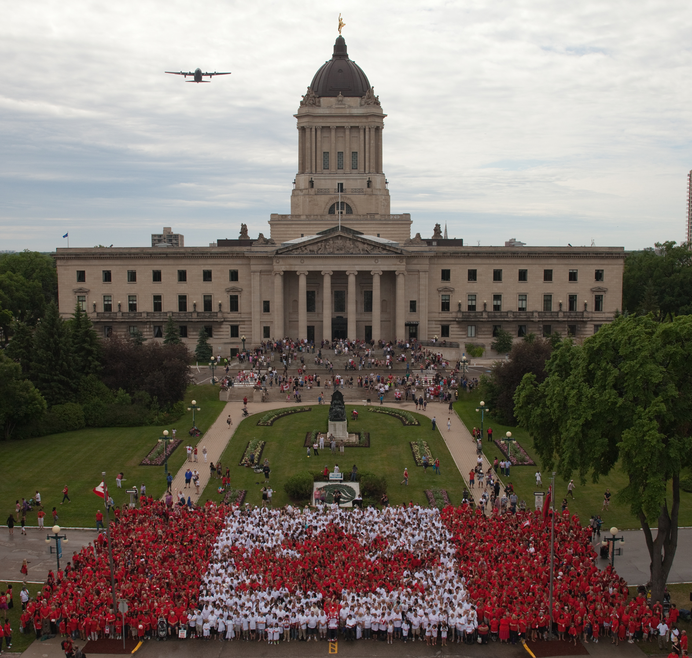
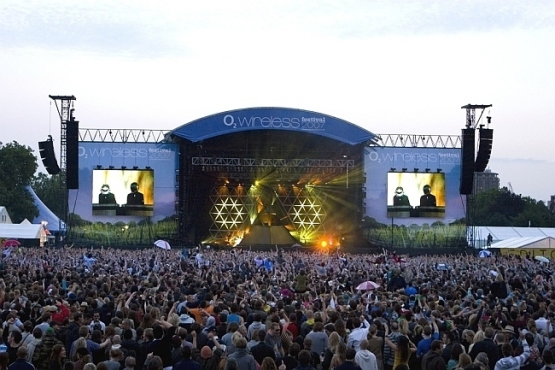
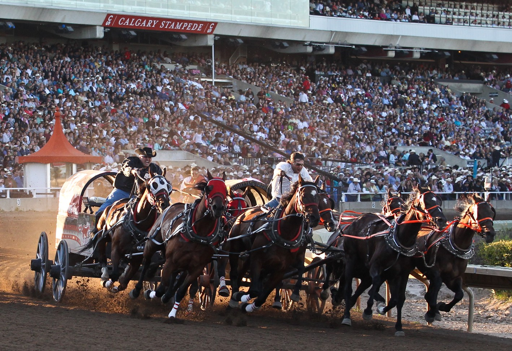
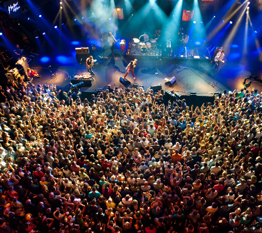

Summer
Banff World Television Festival
Canada (June 7-10)

For 36 years, the Banff World Media Festival has brought top leaders from across Canada for a totally unique experience. The Festival began as an intimate space where unparalleled access and cutting-edge insight could combine to forge relationships and launch new business.
Isle of Wight Festival
UK (June 11-14)

The award winning Isle of Wight Festival takes place in June in the town of Newport and is steeped in history and recognised around the world for its line-up, mixing legendary artists and coming acts.
Glastonbury Festival
UK (June 24-28)

Glastonbury Festival is the largest greenfield music and performing arts festival in the world and a template for all the festivals that have come after it. The difference is that Glastonbury has all the best aspects of being at a festival in one astonishing bundle.
Wimbledon
London,UK (Jun,29-Jul,12)

The Championships, Wimbledon, is the oldest tennis tournament in the world.It has been held at the All England Club in Wimbledon, London since 1877. It is one of the 4 Grand Slam tennis tournaments: the Australian Open, the French Open and the US Open.
Canada Day
Canada (July 1)

Happy Canada Day! On July 1, 1867, the nation was officially born when the Constitution Act joined three provinces into one country: Nova Scotia, New Brunswick, and the Canada province, which then split into Ontario and Quebec.
Roskilde Festival
Copenhagen, Denmark (July 1-4)

Roskilde Festival is the largest North European culture and music festival and has existed since 1971. The purpose of the society is to support initiatives benefitting children and young people and to support humanitarian and cultural work.
Independence Day
USA (July 4)
Independence Day is annually celebrated on July 4. It is the anniversary of the publication of the declaration of independence from Great Britain in 1776.
Wireless Music Festival
England (July 3-5)

The Wireless Festival is a music festival in England that takes place every year in London, and took place at Harewood House, Leeds in 2006 and 2007. It is owned and managed by Live Nation. The first festival took place in June 2005 and was in Hyde Park only.
Calgary Stampede
Canada (July 3-12)

The Calgary Stampede preserves and celebrates western heritage, cultures and community spirit. The Stampede promotes volunteerism, presentsa year-round slate of events, investsin youth and agricultural programs, and develops a unique western experience for the world to enjoy.
International Jazz Festival
Montreux, Switzerland (July 3-18)

The Montreux Jazz Festival is a music festival in Switzerland, held annually on the Lake Geneva shoreline. It is the second largest annual jazz festival in the world.
Chinese New Year
China (Feb, 8)

Spring Festival, widely known as Chinese New Year in the West, is the most important traditional festival, and most important celebration for families in China. It is an official public holiday.